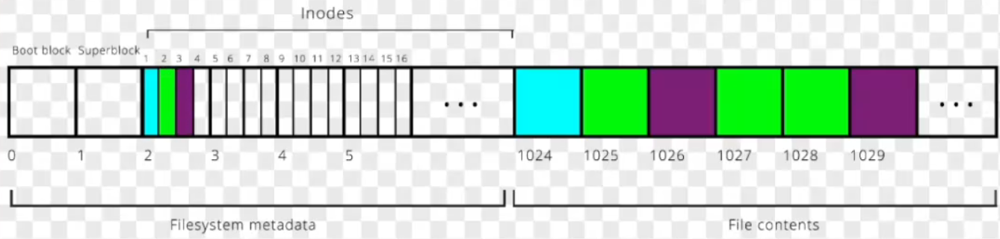

06 操作系统
操作系统
内存管理
1.介绍下Linux的内存子系统
- 虚拟内存管理：地址空间、页表、内存布局
- 物理内存管理：
struct page、Zone区、伙伴系统、SLAB分配器 - 页缓存、回收、换页机制：通过页缓存加速 I/O；当内存紧张时，
kswapd回收不常用页、OOM-Killer终止大进程 - 内存分配接口：malloc、kmalloc、vmalloc、dma_alloc_coherent、get_free_pages、ioremap
虚拟内存管理
1.Linux是几级页表
2.怎么通过虚拟地址查找物理地址
3.Linux下各个进程的虚拟内存空间的布局是什么样的？高端内存映射区是什么？它的地址是什么？
- 首先Linux进程的虚拟内存空间分为内核空间和用户空间2部分
4.为什么要有虚拟内存
- 管理：它为每个进程提供独立的、连续的虚拟地址空间，让编译器和程序员无需关心物理内存的碎片化布局，简化了内存管理
- 保护：隔离了进程地址空间，并且使用页表权限控制机制，确保一个进程的错误或恶意行为不会影响其他进程和系统内核，提升了稳定性和安全性
- 扩展：通过交换技术，将磁盘空间作为内存的延伸，使得程序可以运行比物理内存更大的应用程序，实现了‘小内存跑大程序’
- 共享：允许将同一块物理内存（如库文件代码）映射到多个进程的地址空间，节省内存并提高效率
5.CPU访问内存的详细流程是什么
- CPU发出虚拟地址（VA）
- MMU通过TLB快速将VA转换为PA（若TLB未命中，则查页表）
- 用PA访问Cache（若Cache未命中，则访问主存）
- 最终从Cache或主存读取数据返回CPU
6.对于32位的CPU和OS，内核能够访问到所有4GB的物理内存吗，有哪些方式可以访问
- 不能一次性访问全部的4GB物理内存，但可以做到分次访问所有
- 虽然内核只有1GB的地址空间，这部分对应物理地址的0
896MB，但是对于地址为896MB4GB的物理内存，可以通过kmap将其映射到内核的”高端内存映射区“从而在内核中访问 - 也可以通过
copy_from_user之类的内核和用户空间通信的方式访问
7.用户空间申请的内存，内核什么时候可以访问，什么时候不能访问
- 通过系统调用进入内核时，是可以访问的，不过也要使用
copy_xxx_user之类的API。因为此时是在进程上下文，current宏可以获取当前进程的task_struct，用户页表仍有效 - 通过中断进入内核时或者运行内核线程时，是不可访问用户空间的内存的。因为此时没有用户空间的上下文及页表
- 用户进程通过
mmap将一块物理内存映射到用户空间，这块内存内核和用户态都可以访问
8.内核空间能访问用户空间的内存吗
- 推荐使用
copy_from_user的方式 - 直接解引用用户空间的地址，理论上是没问题的，因为Linux下内核态和用户态共用一个page table，但是不推荐这种方式，存在以下隐患：
- 如果地址无效 → Oops / Kernel panic
- 如果页表未映射 → Page fault (内核态无法处理此异常，会导致kernel panic)
- 如果地址映射到了用户程序恶意区域 → 安全风险
- 如果架构启用了 SMAP / PAN（Supervisor Mode Access Prevention） → CPU 会直接拒绝内核访问用户态页，产生异常
9.什么是vm_area_struct
- Linux管理每个用户进程的虚拟地址空间的基本单位，它是整个虚拟地址空间的一个组成成分。每一个
mmap()、brk()分配的虚拟地址区间都会对应一个VMA - 内核空间的虚拟地址空间不需要VMA，内核启动时就初始化了内核页表的PTE
10.如何理解mmap
定义：mmap是Linux提供的一种内存映射机制，可以把文件或设备的一部分内存映射到用户进程的虚拟地址空间，使得用户可以像访问内存一样直接操纵文件，而不必使用read/write等系统调用。底层原理实际上是在用户空间的页表创建一些PTE并建立映射，从而使用户空间的访问可以直接作用于内核管理的物理页
常见用途：
| 场景 | 示例 |
|---|---|
| 文件映射 | 加载动态库、共享内存文件 |
| 设备映射 | 驱动程序中的 mmap 回调（如显存映射、DMA buffer） |
| 匿名内存分配 | malloc() 底层常常通过 mmap 分配大块内存 |
| 零拷贝数据交换 | 用户态直接访问内核缓冲区 |
系统调用接口如下：
1 | void *mmap(void *addr, size_t length, int prot, int flags, int fd, off_t offset); |
| 参数 | 说明 |
|---|---|
addr |
建议的起始地址（一般传 NULL 让内核选择） |
length |
映射的字节数 |
prot |
映射区的访问权限（PROT_READ, PROT_WRITE, PROT_EXEC, PROT_NONE） |
flags |
控制映射行为（MAP_SHARED, MAP_PRIVATE, MAP_ANONYMOUS, …） |
fd |
被映射的文件描述符（匿名映射时填 -1） |
offset |
文件内偏移，必须是页大小的整数倍 |
| 返回值 | 用户空间得到内存的起始地址 |
优点：
- 减少系统调用次数，避免数据在内核空间与用户空间之间的复制
- 多个进程可以共享映射的内存区域，实现高效通信
- 只在真正访问到的页面才加载，提高性能
分类：mmap分为对文件的映射和匿名映射
- 文件映射：用于文件 I/O、共享内存
- 匿名映射：用于动态分配内存、进程通信、内存池
映射类型：mmap有一个flag形参来决定映射的类型，有以下几种：
文件映射：
MAP_SHARED：多个进程共享同一段物理页，对映射区的修改会同步到文件中MAP_PRIVATE：映射初期与文件共享同一页，但是PTE只有Read的权限，当进程修改数据时，内核执行COW机制，修改仅对当前进程可见，不会影响文件
匿名映射：没有关联的文件，内核直接分配的物理内存并将内容初始化为0
MAP_ANONYMOUS：不映射文件，而是分配匿名内存（如堆/共享内存用途）MAP_FIXED：强制使用addr指定的地址（一般不推荐）
底层原理（文件/匿名映射）：
(1)创建一个vm_area_struct实例，加入当前进程的mm_struct
(2)根据关联的文件，设置VMA的vm_ops回调函数，比如设置成file->f_op->mmap
(3)当用户首次访问该地址时，触发Page Fault。内核在处理时，如果这段地址是有效的，则可以定位到一个vma实例，进而根据vma类型分配物理页并更新PTE建立映射关系
- 文件映射：从文件页缓存加载相应页
- 匿名映射：分配新的空白物理页
如果是映射设备内存（例如 framebuffer、V4L2 buffer、PCI BAR、DMA 区）时，内核在
mmap()的时候就直接建立了虚拟地址–>物理页帧的映射，因此没有懒加载核心原因在于
file->f_op->mmap不同
11.为什么映射设备内存时，不能懒加载
- 物理内存必须固定：DMA引擎通过物理地址访问内存，不能动态分配
- I/O 区不在普通 RAM 中：如 PCI BAR、Framebuffer 等是设备寄存器或专用显存，无法通过页错误机制分配
- 驱动已经分配好物理页：
dma_alloc_coherent()/ CMA / framebuffer 分配时已确定物理区域 - 访问不应触发缺页异常：缺页异常处理函数通常不支持设备 I/O 区
12.VMA如何跟物理内存建立映射关系
建立映射关系本质上就是创建一些PTE，mmap在分配了物理内存之后都得创建PTE，Linux通过以下API进行用户页表的PTE的创建
remap_pfn_range：一次性映射多个连续的物理页vm_insert_page：逐页插入不连续的物理页
注意：只有用户进程分配的内存或内核高段地址空间需要手动建立PTE，内核空间的低段虚拟地址到物理页的 PTE，早在系统启动时就准备好了，高端虚拟地址用kmap映射映射
13.V4L2申请内核缓冲区的USER_PTR方式，是如何做到内核空间访问用户空间的地址的
- 内核通过
get_user_pages()将这些虚拟页解析为struct page *数组，然后根据硬件访问方式：- 用
kmap()/dma_map_page()映射这些page到内核的地址空间 - 最后在释放时用
put_page()解锁页
- 用
14.使用V4L2时，用户空间mmap是如何映射到摄像头的数据的
从用户态的mmap到内核态的调用链如下：
1 | sys_mmap |
物理内存管理
1.Linux内核的物理内存管理方式有哪些
伙伴算法：管理物理页块的分配和合并：按 2^n 页（4KB/页）分配，避免碎片化
Slab分配器：管理频繁分配的小块内存（如 task_struct），减少Buddy系统的内部碎片
2.超过一页的内存要怎么分配
3.内存碎片怎么处理
4.struct page是什么：Linux物理内存管理的核心数据结构，也是管理的基本单位
1 | struct page { |
- Linux 中的物理内存是按“页”管理的，而不是字节。
struct page就是“物理页”的抽象。内核会在启动时为DDR中的每一个物理页（通常大小为 4KB）分配一个实例，用于追踪它的状态、所属、引用计数等 - 内核的所有内存管理，无论是页分配、页缓存、虚拟内存映射还是 swap 回收，都以
struct page为基本单位 - Linux 内核在启动初始化阶段，就会根据检测到的物理内存布局，为系统中的每一个物理页创建一个对应的
struct page。这些结构体被组织成全局数组mem_map[]，用于管理所有物理页，并且内核会把这些空闲页挂在伙伴系统的空闲链表上 - 任何内存分配（
alloc_pages()、kmalloc()、vmalloc()、文件缓存、页表分配、DMA 内存等）都不是新建 page 结构，而是从这个数组中拿对应的struct page来标记状态
1 | +------------------------------+ |
5.Zone区是什么
- 内核将物理页按用途、地址范围或访问特性分为若干个Zone区，每个Zone都有自己的伙伴系统结构
1 | struct zone { |
| Zone 名称 | 典型范围 | 用途 | 备注 |
|---|---|---|---|
| ZONE_DMA | 0 ~ 16MB 或 0 ~ 1GB（平台相关） | 供 DMA 设备访问 | 早期 32 位兼容 |
| ZONE_DMA32 | 0 ~ 4GB | 给只能寻址 32 位的设备用 | 仅在 64 位系统中存在 |
| ZONE_NORMAL | 低端可直接映射内存 | 供内核直接访问（常用区） | 内核线性映射区 |
| ZONE_HIGHMEM | 超出内核直接映射范围的物理内存 | 32 位系统上的高端内存，用户态使用 | 需用 kmap() 访问 |
| ZONE_MOVABLE | 可迁移页 | 用于减少碎片，方便大页分配 | Kernel page migration |
| ZONE_DEVICE | NVDIMM / GPU 显存 | 特殊设备内存 | 使用 device driver |
Linux的物理内存管理宏观结构如下
1 | pglist_data (node) → NUMA 节点 |
6.为什么要有Zone
- 某些外设只能访问特定区间的地址，比如DMA就只能访问0~16MB的物理内存。Zone帮助内核用不同的才策略管理不同的物理内存
- 每个Zone都有独立的伙伴系统，调用
alloc_pages时，内核可以根据标志位从对应Zone的伙伴系统分配物理页
7.mmap/brk系统调用的物理内存是什么时候分配的
- mmap/brk在调用时只会分配VMA并不会分配物理内存，只有在第一次访问触发page fault时才会分配物理内存（调用
alloc_pages），这个机制就是lazy allocation机制
8.什么是lazy allocation机制
页缓存与交换机制
1.什么是内存交换技术
定义：物理内存紧张时，内核把某些进程的暂时不用内存页的内容写回磁盘，并释放这些内存页来获得一些可用的内存空间，并标记其PTE。当再次访问这些内存页时，再从磁盘把数据拿出来
2.介绍下Linux的页缓存（Page Cache）机制
背景：Linux的设计理念是“尽量把空闲物理内存都用起来，提高系统整体性能”，所以它引入此机制，通过struct page会把常用的文件提前缓存到内存中（通过mapping字段与文件的inode关联起来），在内存紧张时，再把不常用的数据换出
定义：在 Linux 中，所有文件 I/O 都是以页为单位进行的，并不是以块为单位的。当进程读写文件时，内核不会直接访问磁盘，而是先把文件内容缓存在页缓存strcut page中，文件的读写操作最终都是在这些页上进行的，若页缓存未命中才会触发块 I/O 读写磁盘，从而实现统一、高效的文件访问机制
1 | 文件 file.txt (大小 = 12KB) |
读取文件的流程：
1 | read() |
内存分配API
1.kmalloc最小内存分配，预期分配128字节实际多少？
kmalloc最小分配单位：依赖Slab分配器的size class，通常为 32字节或64字节（因架构而异）- 分配128字节时的实际开销：
- 若Slab的
size class包含128字节，则精确分配。 - 若无精确匹配，会向上取整到最近
size class（如192字节）
- 若Slab的
- 额外开销：
- 内存对齐（通常8/16字节对齐）
- Slab元数据（如调试信息）
2.kmalloc/vmalloc的底层原理和区别是什么
3.malloc的底层原理是什么
4.new/delete，malloc/free的不同
| 特性 | new/delete | malloc/free |
|---|---|---|
| 语言 | C++ 运算符 | C 库函数 |
| 构造/析构 | 自动调用 | 不调用 |
| 类型安全 | 是 | 否 |
| 初始化 | 支持 | 不支持 |
| 失败处理 | 抛出异常 | 返回 NULL |
| 数组处理 | 专用 new[]/delete[] | 需要手动计算大小 |
| 内存大小 | 自动计算 | 手动指定 |
其他
1.零拷贝技术是什么
- 零拷贝是避免数据在内核态和用户态之间反复拷贝的一种技术
- 传统的I/O数据流通常存在多次的数据拷贝，零拷贝的核心是通过内存映射、DMA等方式，让用户空间/内核/设备访问同一块物理内存
2.什么是内存屏障
- 定义：内存屏障是一种用来限制 CPU 或编译器对内存访问的重排序的的特殊指令，确保在多核/多线程环境中内存访问的可见性和顺序性。分为编译器屏障和 CPU 硬件屏障，常见形式有读屏障、写屏障和全屏障
- 在 Linux 内核和驱动开发中，内存屏障常用于设备寄存器访问、多核同步、RCU 等场景，避免由于乱序执行导致的并发 bug
3.什么是内存抖动
- 定义：系统因为频繁的内存分配释放，或者频繁的页面换入换出，导致 CPU 大量时间花在内存管理上而不是执行真正任务，最终性能严重下降。
- 原因：
- 在操作系统层面，它常见于物理内存不足引发的频繁 page fault，CPU一直忙于换页，应用跑不动
- 在应用层面，常见于频繁 malloc/free 导致的内存碎片、Cache 命中率降低而导致性能下降
- 解决方法一般有：增大物理内存、优化算法减少工作集、引入内存池避免频繁 malloc/free
4.缺页中断的原因是什么
- 页面未分配：访问的虚拟地址没有对应的物理页
- 权限违规：比如写入只读页、用户空间访问内核空间
- 页面被置换到了磁盘中
5.什么是缺页异常，处理流程是什么
- 看中断处理那章
6.UMA和NUMA的定义和区别
- UMA(统一内存访问)：内存被所有 CPU 均匀共享，没有“本地”或“远程”之分，所有处理器访问主存的速度是相同的
1 | +---------+ |
- NUMA(非统一内存访问)：每个CPU都有本地内存，访问速度较快，他们可以访问其他的内存，但延迟更高。所有内存都是共享的逻辑地址空间，但物理分布在多个节点中
1 | +-----------------------------------+ |
Linux对NUMA的支持：Linux 是一个NUMA-aware操作系统。它在调度器和内存分配器中都有 NUMA 优化：
- Linux 调度器会尝试将线程调度到“离其内存最近”的 CPU
- 如果线程频繁访问远程内存，会触发自动迁移页
进程管理
0.你对Linux的进程管理了解多少
- Linux内核中所有任务（包括线程和内核线程）都用
task_struct表示，他包含进程的一些上下文信息比如打开的文件、内存描述符、状态、寄存器的备份… - 进程的创建和销毁：通过
fork/clone系统调用创建，通过写时复制机制共享资源，提升创建进程的速度 - 进程的状态：运行、就绪、可中断/不可中断睡眠、停止、僵尸
- 进程的调度：内核中实现了多种
sched_class，支持多种调度策略，每个任务的调度信息由sched_entity保存 - 进程间的通信机制
1.进程和线程的区别是什么
| 特性 | 进程 (Process) | 线程 (Thread) |
|---|---|---|
| 基本定义 | 资源分配和拥有的基本单位 | 程序执行的基本单位（CPU调度的基本单位） |
| 资源分配 | 每个进程都有独立的地址空间、数据栈、代码段、文件句柄等系统资源。 | 共享其所属进程的全部资源（如全局变量、堆、文件描述符）。拥有独立的栈和寄存器。 |
| 通信方式 | IPC（进程间通信）：复杂度高，开销大。例如：管道、消息队列、共享内存、信号、套接字(Socket)。 | 直接读写进程的全局数据：非常简单高效。但需要同步机制（如互斥锁、信号量）来避免竞态条件。 |
| 创建与开销 | 开销大。创建新进程（fork()）需要复制父进程的地址空间、文件描述符表等，是重量级操作。 |
开销小。创建新线程（pthread_create()）只需分配独立的栈和寄存器，是轻量级操作。 |
| 稳定性与隔离性 | 隔离性高，更健壮。一个进程崩溃不会影响其他进程，因为它们的地址空间是独立的。 | 隔离性低，稳定性差。一个线程崩溃（如非法内存访问）会导致整个进程及其所有其他线程一起崩溃。 |
| 切换开销 | 上下文切换开销大。需要切换页表、刷新TLB（快表）等。 | 上下文切换开销小。只需切换寄存器、栈等，地址空间不变。 |
| 性能 | 由于资源独立，并发编程更安全，但创建、通信、切换的成本更高。 | 由于资源共享，通信和数据共享极其高效，极大地提升了程序的并发性能。 |
2.PV操作是什么
3.无锁编程的方法
4.线程的同步和互斥怎么实现的
5.linux进程间通信方式有哪些？
| 通信方式 | 特点 | 适用场景 |
|---|---|---|
| 管道（Pipe） | 单向通信，父子进程间使用（int fd[2]; pipe(fd);） |
命令行管道 |
| 命名管道（FIFO） | 有文件名，无关进程可通过文件路径访问（mkfifo） |
持久化通信 |
| 信号（Signal） | 异步通知（如 SIGKILL、SIGUSR1），信息量有限 |
进程控制（如终止进程） |
| 共享内存 | 最高效的方式，进程直接读写同一块内存（shmget/mmap） |
高频数据交换（如视频处理） |
| 消息队列 | 内核维护的链表，进程通过消息类型收发数据（msgget/msgsnd/msgrcv） |
结构化数据传输 |
| 信号量 | 同步工具，控制对共享资源的访问（semget/semop） |
资源竞争管理（如数据库连接池） |
| 套接字 | 跨网络或本机通信，支持TCP/UDP（socket()/bind()/listen()） |
分布式系统或本地进程通信 |
| 文件锁 | 通过 fcntl 或 flock 对文件加锁 |
协调文件访问（如日志写入） |
6.linux内核如何获取用户态进程pid？
对于一个进程，它处于用户态还是内核态，在内核眼里都是同一个task_struct，所以获取一个进程的pid跟它在用户态还是内核态无关
1 |
|
7.linux内核空间和用户空间的通讯方式有哪些？
（1）系统调用（Syscall）
- 最基础的方式，用户程序通过软中断（如
int 0x80或syscall）进入内核态 - 示例：
read(),write(),open()等
（2）文件接口（/proc, /sysfs, /dev）
- /proc文件系统：内核暴露信息给用户空间（如
/proc/cpuinfo） - /sysfs：用于设备驱动和内核对象管理（如
/sys/class/net/eth0） - 设备文件（/dev）：用户程序通过
ioctl()与驱动交互（如/dev/mem）
（3）Netlink Socket
- 面向网络的内核-用户通信，支持双向数据传输（如
iproute2工具与内核网络子系统通信） - 示例：
NETLINK_ROUTE（网络配置）、NETLINK_KOBJECT_UEVENT（设备热插拔事件）
（4）共享内存（mmap）
- 用户空间通过
mmap()映射内核内存（如DMA缓冲区），实现零拷贝高效通信 - 示例：显卡驱动、高速数据采集
（5）信号（Signal）
- 内核可向用户进程发送信号（如
SIGKILL、SIGSEGV），但信息量有限
（6）BPF（eBPF）
- 现代高性能内核-用户通信方式，允许用户空间向内核注入安全代码（如网络过滤、性能分析）
8.死锁怎么产生，产生的几大条件，怎么解决
定义：死锁是指两个或多个并发进程/线程在执行过程中，因争夺资源而陷入的一种相互等待的状态，若无外力干涉，它们都将无法继续推进
| 条件 | 描述 | 通俗比喻 |
|---|---|---|
| 互斥 | 资源一次只能被一个进程占用，其他进程如需访问必须等待 | 独木桥一次只能过一个人 |
| 不可剥夺 | 资源只能由持有它的进程自愿释放，不能被系统强制剥夺 | 不能强行把桥上的人推下去 |
| 占有并等待 | 一个进程至少持有一个资源，并在等待获取其他进程持有的额外资源 | 桥上的人（占有着桥的资源）在等对面的人让开（等待另一个资源） |
| 循环等待 | 存在一个进程等待序列 {P1, P2, …, Pn}，其中 P1 等待 P2 占有的资源，P2 等待 P3 占有的资源，…，Pn 等待 P1 占有的资源 | 我等你，你等他，他等我，形成一个循环 |
9.为什么说进程比线程开销大
10.fork()的作用是什么
- 内核创建一个与父进程完全一样的子进程
- 内核会为子进程分配一个新的
task_struct但是大多数字段会和父进程一样
11.什么是Copy on Write Fork，哪些东西copy，哪些新建
- 创建子进程时，子进程不会直接复制父进程的内存空间，而是创建一个新的page table后，复制父进程的所有PTE，并将父、子进程的所有PTE都标记为只读，之后对这些PTE写操作时，会触发page fault，重新分配物理页并更新PTE的权限
- 作用：减少创建新进程时的开销
12.内核线程/进程与用户线程/进程有什么区别
- 用户线程的page table同时包含用户空间和内核空间内存的映射，而内核线程的page table只有内核空间的映射
- 内核线程的
task_struct中的内存描述符mm为NULL，active_mm指向上一个任务的mm_struct
13.Linux内核中的同步机制
（1）进程上下文之间的同步机制
| 机制 | 描述 | 适用场景 |
|---|---|---|
| 互斥锁 | 睡眠锁，竞争失败时任务睡眠 | 长时间持有的临界区 |
| 自旋锁 | 忙等待锁，中断中可用 | 短暂占有临界区 |
| 原子操作 | 硬件保证的原子指令 | 简单变量操作 |
| 信号量 | 计数器，允许有限数量的任务进入 | 资源池管理 |
| 读写信号量 | 区分读写操作，允许多个读并发 | 读多写少的共享数据 |
| 完成量 | 等待一个操作完成 | 线程间同步等待 |
| 序列锁 | 写优先的锁，读操作可重试 | 写少读多，数据简单 |
| RCU（Read-Copy-Update） | 无锁读机制，写者复制更新 | 读多写少，性能要求高 |
（2）进程上下文和中断上下文之间的同步机制
| 机制 | 描述 | 注意事项 |
|---|---|---|
| 自旋锁 | 忙等待锁，中断中可用 | 中断中必须用 spin_lock_irqsave() |
| 原子操作 | 硬件保证的原子指令 | 简单变量操作 |
| 中断禁用 | 本地中断禁用 | 保护短临界区 |
（3）中断上下文之间的同步机制
| 机制 | 描述 | 注意事项 |
|---|---|---|
| 中断禁用 | 唯一可靠方法 | 使用 local_irq_disable() |
| per-CPU变量 | 每个CPU有独立副本 | 避免共享 |
14.互斥锁和自旋锁能套着用吗
- 可以，但是自旋锁必须放在内层
- 自旋锁在内：自旋锁短且不睡眠，不影响外层互斥锁的睡眠特性
- 互斥锁在内：互斥锁可能睡眠，但自旋锁已禁用抢占，导致系统冻结
进程调度
基本概念
调度策略
Linux 支持多种调度策略，主要分为实时调度和普通调度，不同调度策略的任务由不同调度器处理：
| 调度策略 | 说明 | 适用场景 |
|---|---|---|
SCHED_DEADLINE |
实时调度，是按照 deadline 进行调度的，距离当前时间点最近的 deadline 的任务会被优先调度 | |
SCHED_FIFO |
实时调度，优先级高的任务先执行，同优先级的按照先来先到的顺序运行，无时间片，直到主动让出或阻塞 | 硬实时任务（如工业控制） |
SCHED_RR |
实时调度，类似 SCHED_FIFO，但同优先级任务按时间片轮转 |
需要公平性的实时任务 |
SCHED_NOARMAL |
普通调度（默认），基于 CFS 动态分配时间片 | 普通进程（如桌面应用、后台服务） |
SCHED_BATCH |
类似 SCHED_OTHER，但优化批处理任务（减少抢占） |
批处理任务（如编译） |
SCHED_IDLE（已废弃） |
最低优先级，仅在系统空闲时运行 | 低优先级后台任务 |
调度器
Linux内核通过以下数据结构抽象出了调度器基类：
1 | struct sched_class { |
并实现了许多具体的调度器实例：
| 调度器类 | 管理的调度策略 | 核心算法 |
|---|---|---|
rt_sched_class |
SCHED_FIFO, SCHED_RR |
基于优先级的抢占式调度 |
fair_sched_class |
SCHED_OTHER, SCHED_BATCH |
CFS（完全公平调度） |
idle_sched_class |
SCHED_IDLE |
仅在 CPU 空闲时运行 |

调度实体
从调度的角度看每个任务的数据结构，封装进程的调度信息（如 vruntime、权重等），供调度类使用。一般是task_struct的==成员变量==
1 | struct sched_entity { |
运行队列
每个CPU核心都维护了自己的运行队列，维护这个 CPU 上所有可运行任务。作为task_struct的成员变量，调度时，首先根据调度器的优先级选择对应的调度器，然后从他的任务队列选择一个进行切换
1 | struct rq { |
主调度器
是整个调度流程的统称，他其实是个函数schedule()，触发时机包括：
- 时间片耗尽（定时器中断）
- 进程阻塞或主动让出CPU（如sys_sched_yield）
- 高优先级任务就绪（如实时任务唤醒）
Linux调度的实现
先看一下内核中有哪些数据结构以及他们是如何分布的：
1 | // include/linux/sched.h |
Linux的具体调度流程如下，其实非常简单，就是选择下一个任务然后切换上下文：
1 | // kernel/sched/core.c |
比较核心的函数是选择下一个任务，在该函数中，会依次遍历所有调度器的运行队列，来选择下一个任务到底是什么
1 | // kernel/sched/core.c |
相关系统调用

面试问题
1.进程调度有哪些方法
2.中断会引起线程的调度吗
3.什么时候会引起线程的调度
在 Linux 内核中，任务调度（进程调度）主要发生在以下时机，这些时机可以归纳为主动调度和被动调度两类：
主动调度：进程主动放弃 CPU，触发调度器选择下一个任务：
系统调用中显式调用
schedule()：比如进程调用sleep()、nanosleep()、sched_yield()等函数时，会主动让出 CPU阻塞操作：当进程等待资源（如文件 I/O、网络数据、信号量、锁等）时，会进入阻塞状态，内核会主动调用
schedule()切换其他任务cond_resched()检查：在内核代码的某些长时间循环中（如文件系统或网络栈），会调用cond_resched()检查是否需要调度，避免长时间占用 CPU
被动调度（抢占式调度）内核强制剥夺当前任务的 CPU 使用权：
时间片耗尽：在
CFS中，当在定时器中断中发现进程的时间片用完时，调度器会被触发中断返回时：硬件中断或系统调用返回用户空间前，内核会检查
TIF_NEED_RESCHED标志位。若被标记，则调用schedule()切换任务更高优先级任务就绪，例如：
- 实时进程（RT 任务）被唤醒
- 使用
wake_up_process()唤醒的进程优先级高于当前进程
内核抢占（Kernel Preemption）配置了
CONFIG_PREEMPT时，内核态任务也可能被抢占：- 在中断处理返回内核态时（非关键路径）
- 显式调用
preempt_enable()时检查抢占标志
4.抢占式进程调度要怎么实现
5.介绍下CFS调度算法
- 完全公平调度算法的核心思想是让每个任务的运行时间基本一致，他给每个任务维护了一个虚拟运行时间
vruntime变量，当作这个任务的运行时间。当CFS调度器选择下一个运行的任务时，会根据vruntime选择任务运行，尽可能的让所有任务的vruntime一致。vruntime并不是实际运行时间，而是结合任务的优先级、nice值和实际的运行时间计算的到的，优先级越大，相同实际运行时间对应的vruntime越低
7.CFS底层怎么实现的，用的什么数据结构，红黑树怎么取的，key和value是什么
1 | struct cfs_rq { |
- 内部通过维护红黑树来按
vruntime排序的所有任务，每次取红黑树左下角的节点，即可得到vruntime最小的任务 - pick_next_task、enqueue_task、dequeue_task 都是 O(log n)
8.介绍下Linux的进程调度模块
- Linux内核调度机制的核心目标是公平高效地分配CPU资源，同时支持实时任务。它采用多级调度架构实现进程调度，主要组件包括主调度器（Core Scheduler）、调度类（Scheduling Classes）和运行队列（Runqueue），通过策略（如CFS、实时调度）和事件驱动（如中断、系统调用）实现动态调度
9.O(1)调度器的底层原理是什么（进程调度的时间复杂度不随任务数量改变）
O(1)调度器是CFS出来之前（Linux 2.6.x）的默认调度器，它pick_next_task、enqueue_task、dequeue_task 都是 O(1)，但不能保证公平
Linux为每个CPU都维护了一个二维的就绪队列和一个bitmap，通过bitmap可以知道哪个优先级的就绪链表有任务，之后再从该级链表中取任务就行了
10.实时调度器类和CFS调度器有啥区别
- 实时：高优先级任务绝对优先
- CFS：所有任务按权重公平分配CPU时间，以vruntime作为调度的依据
驱动开发
1.谈一下你对Linux驱动子系统的认识
- 总线-设备-驱动的统一模型：核心类、匹配过程
- 设备树描述板级信息
- 驱动的分层
- 驱动开发的2种方式：编译成单独的模块 / 编译进内核
设备树
1.设备树的作用是什么
- 描述板级信息，把硬件的详细信息从驱动中抽离出来，增加驱动的复用性
2.设备树和驱动匹配的详细流程
- 设备树和驱动的匹配本质上是设备和驱动在同一条总线上通过
bus_type的match()回调函数找到彼此，流程分为以下几步：- 设备树的硬件描述：首先设备树中使用
compatible等属性对设备进行标识 - 内核解析并创建设备对象：内核启动时，会解析DTB文件，将各个节点转换成
struct device_node。并且根据所在总线类型（I2C、SPI、platform），转换成对应的device对象，例如i2c_client或platform_device，并存到对应总线维护的链表 - 驱动注册并匹配：每次有新驱动注册到内核时，都会触发总线的
match函数，遍历设备链表看看有没有和该驱动匹配的，如果有的话，就会调用驱动的probe函数 - probe阶段：完成设备的初始化，比如向内核申请GPIO、中断等资源、注册字符设备…
- 设备树的硬件描述：首先设备树中使用
3.probe函数触发条件
probe函数其实是bus_type的一个回调函数，当bus通过match成功匹配驱动和设备时，会调用该函数
4.设备和驱动匹配的方法有哪些
- 设备树方式：节点的
compatible属性和驱动的.of_matchtable字段一致 - ACPI方式：x86架构常用
id_table：驱动的.id_table字段和设备对象里的名字(比如i2c_client->name)进行匹配- 名字方式：设备的
name（来自设备树节点名字里@前的部分）和驱动的driver.name一致
5.内核解析设备树节点的详细流程（父节点、子节点、address-cells/size-cells）
- 设备树传递：Bootloader将DTB加载到RAM，并在启动内核时把地址传给内核
- 内核早期解包：在内核启动初期（汇编阶段），会调用
early_init_dt_scan()对DTB进行初步验证，读取其Magic Number，并获取一个指向根节点的全局指针 - 在内核中构建设备树数据结构：之后内核会调用
unflatten_device_tree()在内核中构建设备树，将设备树节点转化为struct device_node，每个属性对应struct property - 解析设备树的chosen/memory节点：
- 解析
chosen节点里的bootargs（内核启动参数） - 解析
memory节点里的物理内存大小和起始地址
- 解析
- 总线扫描并注册设备：当各个 bus（platform、i2c、spi、pci）初始化时，会调用相应的
of_xxx_populate()去扫描设备树下的子节点，把device_node转成设备对象并挂到总线上- platform 总线：
of_platform_populate()→of_platform_device_create_pdata()→ 创建platform_device - i2c 总线：
of_i2c_register_devices()→ 创建i2c_client - spi 总线：
of_register_spi_devices()→ 创建spi_device
- platform 总线：
- 匹配和probe：当驱动注册时（或设备先注册时），总线
match函数会拿device->of_node->compatible对比driver->of_match_table。如果匹配成功则会调用probe()
6.内核加载DTB文件的详细流程
- Bootloader 阶段：选定并加载 dtb 文件到内存，启动内核时把 dtb 地址通过寄存器传给内核
- 内核启动早期：在
setup_arch()中获取 dtb 地址，调用early_init_dt_verify()校验合法性，并在必要时 relocate - DTB 解析阶段：
early_init_dt_scan_nodes()解析/chosen和/memory，随后of_flat_dt_scan()遍历整个 dtb，构建struct device_node树，并处理父子关系、#address-cells/#size-cells等信息。 - 后续使用：平台代码和总线框架（platform、I2C、SPI 等）再根据这些
device_node实例化出具体的device，等待驱动匹配
7.对于先有设备后有驱动以及先有驱动后有设备，内核分别是怎么创建设备节点的
- 先有设备：device节点是由设备树解析产生 → 进入 device 链表，等 driver 上来再匹配
- 先有驱动：driver先挂到driver链表，等device节点被创建（热插拔/DT late add/硬件枚举等）再触发匹配
8.设备树里面主要的一些属性以及作用
- 看之前的笔记，挺多的
9.一个驱动里面需要哪些设备树信息
- 不同的设备不一样啊，至少得有用于和驱动匹配的一些属性比如
compatible
10.说一下gpio驱动怎么写
- 比如下面这个，需要GPIO控制器，这个pin在该控制器下的索引，有效电平
1 | led-gpio = <&gpio1 3 GPIO_ACTIVE_LOW>; |
驱动框架
1.struct file_operations有哪些操作函数
- open/close/read/write/unlocked_ioctl/mmap…
2.字符设备驱动的注册流程是怎样的 / 如何写个字符设备的驱动
- 向内核申请一个主设备号（静态指定或者内核动态分配）
- 初始化一个
struct cdev，主要是填充ops和owner字段 - 使用
cdev_add添加cedv到内核 - 创建设备节点文件（
class_create()，device_create()）
3.主/次设备号的范围和作用
- 主设备号：驱动类别，12位
- 次设备号：同一驱动下的不同设备实例，20位
4.应用层的open/read/write/ioctl 是如何对应到驱动层函数的 / 调用流程
字符设备驱动 — 野火嵌入式Linux驱动开发实战指南——基于i.MX6ULL系列 文档：看4.5
- 应用层的
open/read/write/ioctl实际上是glibc的库函数，内部会发起系统调用，执行SVC/ecall之类的特权指令，触发异常 - 用户空间使用
open()系统调用函数打开一个字符设备时(int fd = open(“dev/xxx”, O_RDWR))大致有以下过程：- 内核在虚拟文件系统VFS中的查找对应与字符设备路径对应
inode对象，获得主设备号 - 遍历内核中的cdev_map哈希表，根据inod节点中的主设备号找到cdev对象
- 创建并初始化
struct file对象，将 struct file对象中的 file_operations成员指向 struct cdev对象中的 file_operations成员（file->fops = cdev->fops） - 回调file->fops->open函数
- 返回内核中新创建的
file对象在内核中的索引即fd，后续操作（如read）可通过file->private_data获取设备状态
- 内核在虚拟文件系统VFS中的查找对应与字符设备路径对应
5.驱动里如何实现阻塞式 read（比如等待按键按下才返回）
- 使用内核提供的wait_envent机制（和用户态的条件变量很像），在没数据时阻塞此线程，数据准备好了再唤醒
6.知道platform总线设备驱动的特点和核心思想吗
- platform设备驱动框架的核心思想是实现通过提出一种虚拟总线，所有的驱动开发都可以遵循”设备-驱动-总线“这种模型，实现驱动和设备的解耦。让Linux的驱动开发统一化，增加了驱动的可移植性
7.字符设备和块设备的区别
- 数据的访问方式：字符设备以字节为单位顺序访问，不支持随机读写；块设备以块为单位进行数据的读写，且可以根据地址随机进行访问
- 缓存机制：字符设备没有经过内核的页缓存层，
read()等系统调用直接和驱动进行交互，结构比较简单；而内核会通过页缓存机制对块设备的I/O操作做写优化，比如缓存、合并从而提高效率
1 | 字符设备：用户空间 → VFS → 驱动 → 硬件 |
- 驱动框架：字符设备驱动使用
file_operations注册提供给VFS回调的操作集合，而块设备使用block_device_operations结构体
8.能用字符设备驱动框架来访问块设备吗
- 理论上是可行的，但是使用字符设备驱动框架来访问块设备的话会引入一些问题：
read()接口只能以字节为单位顺序的对块设备进行访问，除非自己再实现seek函数，这违背了块设备能随机读写的特性- 使用字符设备驱动框架的话，就没法使用页缓存、I/O调度器、文件系统等机制，效率会比较低
9.什么是I/O调度器
- I/O 调度是 Linux 块层（block layer）中一个重要子系统，它负责对来自上层的多个磁盘读写请求进行排序、合并和优化调度，以提高磁盘访问效率、减少寻道时间，并保证系统的公平性与响应性
10.一般封装驱动的file_operations时，为什么一般都会封装open，里面通常会干什么
.open的形参包括inode，通过它可以拿到在probe中往内核的cdev实例，进而通过container_of拿到完整的设备，并存到file实例的private_data中，这样在其他IO操作时就都可以拿到完整的设备了
内核模块
1.为什么有了驱动注册的代码前面要加__init和__exit宏？
__init宏定义会把被修饰的函数放到ELF文件的.init.text节区，内核启动的时候，会通过init_call机制自动执行该段的所有函数，并在执行完毕后释放内存
2.驱动的加载流程是什么
- 驱动可以直接编译进内核（静态加载），也可以编译成一个内核模块（动态加载），2者的加载流程是有很大区别的：
- 静态加载
- 驱动中通过
module_init()宏将驱动的初始化函数放到一个特定的内存节区（例如.initcall） - 内核启动时，利用initcall机制，按特定顺序依次执行所有这些初始化函数
- 驱动中通过
- 动态加载
- 用户空间调用
insmod或modprobe命令，在命令中通过sys_init_module()系统调用陷入内核 - 内核首先检查当前用户的权限并分配内存，然后将
.ko文件的内容拷贝到内核，并解析ELF文件 - 内核调用模块通过
module_init()宏注册的初始化函数
- 用户空间调用
3.用户空间是如何在/dev目录下创建设备节点的
/dev下的设备节点本质上是一个特殊文件，包含主次设备号，用来让用户空间访问内核驱动- 早期是通过
mknod手动创建 - 现代系统通常由
udev/mdev自动完成：驱动里调用class_create和device_create在 sysfs 里生成设备信息，udev守护进程监听到内核uevent热插拔事件后，自动在/dev下生成对应的设备节点
场景题
1.V4L2会向应用层提供设备节点，比如/dev/video0，假如有多个进程要同时需要/dev/video0的数据，该怎么处理
- 独占模式：驱动中维护一个变量表示当前设备的打开状态，当设备被一个进程打开后，其他进程
open时返回错误 - 多句柄共享模式：每个进程都在内核创建自己的buffer queue，然后通过mmap映射
- 用户空间共享：只有一个进程负责读取数据，通过进程间的通信机制比如共享内存传递给其他进程
- 使用
v4l2loopback创建虚拟设备，把同一份数据复制到多个虚拟节点，让多个进程各自打开
2.对于普通的字符设备，如果有多个进程操作，如何处理
独占访问
- 驱动在
open()里检查是否已经被占用，如果是则返回-EBUSY。常见于硬件资源有限
- 驱动在
多进程共享读写
驱动内部做并发控制，例如加锁（spinlock/mutex），保证多进程同时访问时不会破坏硬件或数据
例如串口驱动，允许多个进程
read()/write()，驱动里会维护接收缓冲区和发送缓冲区
一个生产者、多消费者
驱动可以设计一个 环形缓冲区，把硬件数据放进去，然后多个进程
read()时各自消费或者像 input 子系统（键盘、触摸屏），内核本身提供 多播机制，保证每个进程都能收到事件
用户空间转发
- 如果驱动本身不支持多进程共享，可以像 V4L2 一样，在用户态做转发：一个进程独占设备，再用共享内存/Socket/管道把数据分发给其他进程
中断及异常管理
1.外部中断的实现原理
2.中断的概念
- CPU在执行当前代码的时候被打断，转而去执行另一端代码（ISR）
3.用什么函数注册中断
4.在中断中要注意什么
- 中断上下文中，不能睡眠
5.中断和异常有什么区别
- 中断是CPU指令以外的事件引起的
- 异常是由CPU指令引起的
6.多个中断同时发生怎么办
控制器会根据中断优先级决定哪一个先送给 CPU
其他中断被标记为挂起
CPU 响应当前优先级最高的中断后，控制器会继续把下一个挂起中断送到 CPU
7.中断上下文里面用什么方式实现资源共享
在中断上下文访问共享资源时，不能使用会睡眠的锁（如 mutex）常用方式有：
spinlock（多核 CPU，可加
irqsave禁中断）local_irq_disable / irq_save（单核 CPU 临界区）
atomic 原子操作（简单计数器或标志）
RCU / seqlock（读多写少数据结构
选择合适的方式可以保证 ISR 与底半部以及进程上下文安全地共享资源
8.上半部和下半部使用场景 / 为什么Linux的中断要分为上下半部
降低中断延迟
硬件中断会屏蔽同级或低级中断，如果 ISR 里做的事情太多，会延迟其他中断的响应
分上下半部后，上半部硬中断上下文，执行快，只做关键的最小操作
允许复杂操作
- 硬中断上下文不能休眠（例如不能调用
schedule()、不能拿可能阻塞的锁），所以像内存分配、文件操作等都必须放到下半部
- 硬中断上下文不能休眠（例如不能调用
提高系统吞吐量
- 上半部快速返回，系统能及时响应更多硬件中断；下半部可以批量处理数据，减少频繁的中断开销
9.page fault处理流程是什么
下面以ARMv7A为例：
CPU访问一个page table中没有有效映射（PTE）的虚拟地址
MMU触发Data Abort异常，并分别保存出错的地址和原因到FAR和FSR寄存器
PC跳转到异常向量表中的Data Abort或Prefetch Abort入口，并进入内核的异常处理函数中
在内核的
do_page_fault()中进行缺页异常的核心处理流程首先检查地址是否合法：通过
find_vma(mm, addr)在当前进程的内存描述符（mm_struct）中看是否能找到对应的VMA找不到：访问非法地址，给当前进程发SIGSEGV
找到了但权限不匹配：给当前进程发SIGSEGV
如果合法且权限匹配，则进入后续的步骤，调用
vma->vm_ops进行缺页处理
缺页处理：区分匿名页缺页 和 文件映射缺页
- 匿名页（堆、栈）：分配新的物理页 → 建立页表映射
- 文件映射：触发 page cache 读入
更新page table，刷新TLB
返回用户态，继续执行
10.什么是中断上下文
- 当CPU响应一个硬件中断时，内核所执行的中断处理程序（ISR）的运行环境
11.为什么中断上下文中不能进行阻塞/睡眠
- 中断上下文不是一个进程，它没有属于自己的、可以被保存和恢复的任务结构（
task_sturct），因此一旦阻塞（睡眠），就再也没有办法被唤醒并继续执行了
文件系统
1.你对Linux的文件系统了解多少
Linux内核的文件子系统主要分为以下2个模块：
- 虚拟文件系统层：为了使用户层的应用程序能够兼容多种不同的文件系统，Linux内核实现了个虚拟文件系统(VFS)，给应用层提供统一的文件操作接口（open/read/write/stat 等）通过四个核心对象
super_block、inode、dentry、file把所有文件系统统一起来，并借助 page cache、dentry cache、inode cache 提升性能 - 各具体文件系统的实现：Linux内核为不同的文件系统如ext4、nfs、ftfs…都实现了VFS的提供的接口
- 虚拟文件系统层：为了使用户层的应用程序能够兼容多种不同的文件系统，Linux内核实现了个虚拟文件系统(VFS)，给应用层提供统一的文件操作接口（open/read/write/stat 等）通过四个核心对象
1 | 用户空间 |
VFS
Linux通过VFS把所有文件系统（ext4、fat、nfs、tmpfs…）统一起来，内部用四个核心对象来抽象一切“文件”
| 对象 | 作用 | 代表什么 | 生命周期 |
|---|---|---|---|
super_block |
整个文件系统实例 | 一个挂载点（比如 /、/mnt/sdcard） |
文件系统挂载时创建 |
inode |
文件本体 | 文件的元数据（权限、大小、时间、磁盘块号） | 文件被访问时创建 |
dentry |
目录项 | 文件名到 inode 的映射关系 | 路径解析时创建 |
file |
打开的文件 | 进程打开文件的实例，包含偏移量、flag | open() 时创建，close() 时销毁 |
super_block和inode的内容来自磁盘，内核会从磁盘读取具体数据再在内存中创建对象，而dentry和file仅存在于内存
某文件系统的磁盘物理布局：

super_block
定义：super_block表示一个已挂载的文件系统实例。它描述了一个磁盘分区或内存文件系统的全局信息。每次 mount() 时都会创建一个 super_block对象
1 | struct super_block { |
核心作用：
- 管理该文件系统所有 inode
- 保存文件系统级别的信息（块大小、挂载选项）
- 提供文件系统操作函数（读写 inode、同步、回写等）
inode
定义：用于存储文件的属性（包含对应文件的类型、修改时间、文件内容在磁盘的位置、链接关系、权限等信息）每个文件都有唯一的inode，可以通过stat命令查看一个文件的inode信息
1 | struct inode { |
核心作用：
- 存储文件的属性：权限、大小、时间、类型
- 指向文件的数据块（或 page cache）
- 提供对文件内容和元数据的操作接口
- 管理文件引用计数

dentry
定义：dentry(目录项)用来形成文件系统的路径层级结构，并保存了文件名和inode的映射关系
1 | struct dentry { |
核心作用：
- 负责路径解析
- 加速路径缓存：Linux 为了加速路径查找，维护了一个全局 dentry cache，每个访问过的路径会被缓存为 dentry，下次查找同一路径不必访问磁盘
- 维持目录树关系
- 提供名字查找与比较函数
file
定义：file 表示进程打开的文件实例。每调用一次 open()，内核就创建一个新的 struct file。即使多个进程打开同一个 inode，它们也拥有不同的 file 对象
1 | struct file { |
核心作用：
- 保存当前进程打开文件的状态
- 记录文件偏移（读写位置）
- 提供具体操作函数表（read, write, mmap…）
- 和进程的 fd（文件描述符）表绑定
磁盘布局
不同文件系统的磁盘布局都不同，但基本都会有super_block和inode等数据，下面以EXT4文件系统来分析一下
Ext4将磁盘划分为多个块组（Block Groups），每个块组包含：
- Superblock：存储文件系统的全局信息。如块大小、inode总数、空闲块数…
- Group Descriptor Table：描述每个块组的元信息。如块位图位置、inode 表位置、inode 位图位置等
- Inode Bitmap：标记哪些 inode 已被使用（1）或空闲（0）1 bit 对应 1 个node
- Inode Table：存储inode的一个容器，每个 inode 对应一个文件或目录
- Block Bitmap：标记块组中哪些数据块已被使用（1）或空闲（0）1 bit 对应 1 个块
- Data Blocks：存储实际的文件数据或目录结构
1 | +-------------------+-------------------+-----+-------------------+ |
面试问题
1.文件打开的详细流程
1 | 用户态: |
2.文件删除的流程
- 使用
rm删除一个文件时，会调用unlink这个系统调用，它的语义是从目录中移除“文件名 → inode”的映射关系（即删除目录项），但==不一定立即删除文件数据==
1 | 用户态: unlink("file.txt") |
3.Linux为什么打开一个文件之后再删除它，不会影响当前已打开的文件，Windows却不行
- inode有2个字段：
i_nlink和i_count，即使unlink()后i_nlink为0了，由于还有进程打开了该文件，所以对应的i_count不为0，只有当2个字段同时为0时，OS才会删除文件
4.文件read的详细流程
- 通过系统调用进入内核，通过 VFS 找到对应文件系统/驱动的
.read()回调函数，文件系统层先查找页缓存，如果缓存中已有数据则直接拷贝给用户，若缓存未命中，则通过submit_bio()发起块 I/O 请求，由通用块层和 I/O 调度器处理这个请求，向块设备驱动发起读操作，由块设备驱动执行实际的磁盘读取数据并通过 DMA 写入页缓存，随后再复制到用户缓冲区- 用户进程层 →
read(fd, buf, size) - 系统调用层 →
sys_read()→vfs_read() - VFS 层 →
file->f_op->read - 文件系统层 →
generic_file_read_iter()/do_generic_file_read() - 页缓存层 → 命中：
copy_to_user()；未命中：发起 I/O 请求 - 通用块层 →
submit_bio()→blk_queue_bio()→ I/O 调度器 - 块设备驱动层 →
request_fn()/make_request_fn()→ DMA - 硬件层 → 磁盘控制器执行读操作
- 回传路径 →
bio_endio()→ 页缓存回填 →copy_to_user()
- 用户进程层 →
5.文件write的详细流程
write()不会立即写入磁盘，只会写入page cache并标记脏页，只有通过fsync之列的写回机制后，才会将数据写入磁盘
| 阶段 | 函数 | 关键动作 | 层级 |
|---|---|---|---|
| ① 用户态 | write() |
发起系统调用 | 用户空间 |
| ② 内核入口 | sys_write() |
切换到内核 | 内核 syscall 层 |
| ③ VFS 层 | vfs_write() |
查找 file、调度文件系统 | 虚拟文件系统 |
| ④ 文件系统层 | generic_file_write_iter() |
将数据从用户空间拷贝到页缓存、标脏 | 文件系统通用层 |
| ⑤ 缓存管理 | set_page_dirty() |
延迟写回标记 | 页缓存层 |
| ⑥ 回写线程 | wb_writeback() |
异步落盘 | writeback 子系统 |
| ⑦ 块层 | submit_bio() |
发出磁盘请求 | 块 I/O 层 |
| ⑧ 驱动 | 驱动程序 | DMA → 控制器 → 盘 | 驱动层/硬件 |
6.Linux中文件的类型
- Linux中一切皆文件，不管是控制硬件设备，还是网络，均是对文件操作。Linux中文件大致分为7类，具体属于什么类型由inode中的对应字段存储：
（1）普通文件：主要包括文本文件和二进制文件，是一般意义上的文件，数据都存在磁盘中，文件内容以字节为单位存储，并且可以访问
（2）目录文件：存一个目录结构的文件，目录中每一个元素被称为目录项。目录文件本身用
struct dirent存储（3）符号链接文件
（4）管道文件：通过
pipe()系统调用创建的内存中的一个缓冲区，主要用于进程间通信（5）套接字文件：用于网络通信
（6）字符设备文件：描述字符设备的文件，在
/dev下，它是由文件系统虚拟出来的，存储于内存之中（7）块设备文件：描述块设备的文件，也在虚拟文件系统中
7.路径是咋解析的
- 从当前目录或者根目录开始，以
/为分隔符，一层一层解析，每层对应一个dentry - 以解析
/home/user/a.txt为例- 本质上是分别查找
/、/home、/home/user、/home/user/a.txt的inode，解析每一个inode前都需要先创建一个dentry，所以会从dentry("/")创建到dentry("/home/user/a.txt")
- 本质上是分别查找
8.硬链接和软链接的区别
| 对比项 | 硬链接 | 软链接 |
|---|---|---|
| 本质 | 多个dentry指向同一个inode | 一个独立的文件，内容是目标路径字符串 |
| inode | 相同 inode 号 | 拥有自己的 inode |
| 数据是否共享 | 完全共享（同一文件） | 不共享（指向目标路径） |
| 删除原文件影响 | 不影响（因为还有其他链接） | 目标不存在则变“死链” |
| 可跨文件系统 | 不可（inode 号只在同一文件系统内有效） | 可以（路径字符串可指向任意挂载点） |
| 对目录使用 | 一般禁止（防止环） | 可对目录创建链接 |
| 类型识别 | 普通文件（-） |
特殊文件（l） |
| inode 链接计数 | 增加（i_nlink++） |
不影响目标文件 |
| 创建命令 | ln <source> <target> |
ln -s <source> <target> |
9.文件什么时候写回磁盘
当用户调用
write()时，数据通常不会立刻写入磁盘，而是先写入内存中的page cache真正写回磁盘的时机有三类：
主动触发（应用调用
fsync()/sync()/msync()）内核后台线程定期回写（
pdflush/flush-*/wb_workqueue）- 被修改的文件对应的page和inode都会被标记为dirty，后台线程定期把脏页回写
被动触发（缓存回收、内存压力、文件关闭、文件删除等）
10.inode的生命周期是怎样的
- inode 对象在内存中并不是一直存在的。它只有在文件系统挂载或访问文件时，才会由内核动态创建
- 当文件第一次被访问时，VFS 调用文件系统的
lookup()，通过iget()从磁盘 inode 表读取对应的元数据，并在内存中创建一个struct inode缓存。若 inode 已在缓存中（icache 命中），则直接复用。新建文件时则调用new_inode()创建新的 inode 并写入磁盘 i_count和i_nlink为 0 时，iput()触发回收并释放该 inode
杂项
1.为什么中断中不能睡眠
- 中断上下文无法保存：中断没有自己的
task_struct，如果睡眠则会发生任务调度，无法从其他任务再切换回中断 - 破坏实时性：中断要求快速响应，睡眠会导致不可预测的延迟
2.堆和栈的区别是什么
| 特性 | 堆（Heap） | 栈（Stack） |
|---|---|---|
| 管理方式 | 手动申请/释放（malloc/free） |
自动分配/释放（函数调用时） |
| 连续性 | 动态增长，地址不连续（碎片化） | 连续内存，大小固定（可能溢出） |
| 速度 | 慢（需系统调用和复杂管理） | 快（仅移动栈指针） |
| 作用域 | 全局可见，需手动释放 | 局部变量，函数退出自动销毁 |
| 典型问题 | 内存泄漏、碎片化 | 栈溢出（如递归过深） |
3.进程的上下文具体指什么
- 从硬件的角度看：CPU中的各个寄存器（PC、SP、MMU基址）
- 从软件的角度看：
- 虚拟地址空间
- 打开的文件
- PCB
4.锁的类型有哪些
| 锁类型 | 特点 | 适用场景 |
|---|---|---|
| 自旋锁 | 忙等待（不睡眠），适用于短临界区 | 多核、中断上下文 |
| 睡眠锁 | 睡眠等待，避免CPU浪费 | 长临界区、进程上下文 |
| 读写锁 | 允许多读/单写，提高并发性 | 读多写少（如配置文件） |
5.系统调用用户态到内核态会发生什么
6.用户态堆栈在系统调用时会发生什么变化吗
| 特性 | 用户态栈 | 用户态堆 |
|---|---|---|
| 系统调用时是否变化 | 不变，syscall时会切换至内核栈 | 一般不变，除非显式调用 brk/mmap |
| 内核访问方式 | 完全隔离（内核用独立栈） | 可通过安全接口（如 copy_from_user）访问 |
7.什么是用户态、什么是内核态
程序运行在用户空间就是用户态，运行在内核空间就是内核态。
- 从硬件角度来看，用户态CPU处于低特权等级，只能操作部分寄存器，不能访问硬件。而内核态CPU处于高特权等级，可以操作所有寄存器并访问硬件
- 从出错危害性来看，用户态如果一个程序崩溃了，不会影响别的程序，而内核态崩溃了，可能OS就崩溃了，只能重启系统
8.FreeRTOS和Linux的主要区别是什么
| FreeRTOS | Linux | |
|---|---|---|
| 本质与目标 | 实时操作系统（RTOS） 核心目标是确定性和实时性，保证任务在严格的时间限制内完成 | 通用操作系统（GPOS） 核心目标是吞吐量和公平性，公平地为所有应用程序分配资源 |
| 内核架构 | 微内核（Microkernel） 内核只提供最核心的功能（任务调度、IPC、内存管理），其他功能（如网络栈、文件系统）作为可选组件在用户任务中实现 | 宏内核（Monolithic Kernel） 内核庞大而完整，将文件系统、网络协议栈、设备驱动等大量功能都集成在内核空间中，性能高但复杂度也高 |
| 应用场景 | 深度嵌入式、实时控制领域 航空航天、工业自动化、医疗器械、汽车电子（如ECU）、家电、IoT设备等运行在资源极度受限的微控制器（MCU）上，如STM32，ESP32，Cortex-M系列 | 应用处理器、复杂系统 服务器、桌面电脑、智能手机、路由器、智能电视、功能复杂的嵌入式设备（如机器人、自动驾驶域控制器）运行在资源丰富的微处理器（MPU）上，如Cortex-A系列，x86 |
| 硬件资源需求 | 极低 ROM: 几KB ~ 几十KB RAM: 几百字节即可运行，通常几KB~几十KB CPU: 无MMU要求，8位、16位、32位MCU均可 | 很高 ROM: 至少几MB（精简版），通常几十MB到数GB RAM: 至少几MB（精简版），通常上百MB到数GB CPU: 通常需要带MMU（内存管理单元）的MPU |
| 调度策略 | 优先级抢占式调度，支持时间片轮转。高优先级任务就绪时，会立即抢占低优先级任务响应时间是微秒（µs）级，确定性极高（硬实时） | 完全公平调度（CFS）等，旨在让所有进程公平地分享CPU时间，优化整体系统吞吐量响应时间是毫秒（ms）级，虽然可以通过打PREEMPT-RT补丁提升实时性，但本质仍是软实时 |
| 内存管理 | 简单 通常只提供简单的堆内存分配（pvPortMalloc / vPortFree），开发者需要根据芯片RAM大小自行配置，无虚拟内存，直接访问物理地址 |
复杂且安全 使用虚拟内存管理，每个进程都有独立的、受保护的地址空间。这提高了系统的稳定性和安全性，一个进程崩溃不会导致整个系统崩溃 |